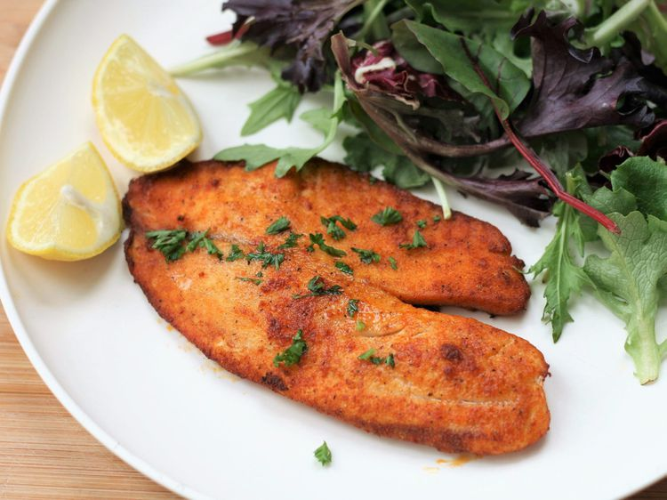

Air Fryer Tilapia Recipe

Description
Tilapia cooked in the air fryer is ready in minutes. Crusted in Parmesan cheese it comes out wonderfully moist and flavorful. Serve with rice pilaf or roasted veggies. (source)
Ingredients
- 1/2-cup freshly grated Parmesan cheese
- 1.5-teaspoons paprika
- 1 teaspoon garlic powder
- 1/2-teaspoon salt
- 1/2-teaspoon freshly ground black pepper
- 4 (6 ounce) tilapia fillets, thawed if frozen
- cooking spray
- 1 tablespoon minced fresh parsley (Optional)
- 4 lemon wedges (optional)
Steps
Making homemade lasagna much easier than it looks. You'll find the full, step-by-step recipe below — but here's a brief overview of what you can expect:
- Cook the meat: Cook the ground meat in a skillet until browned and crumbly. Add the onion and continue cooking until it's translucent. Stir in the canned tomato products, half of the parsley, garlic, basil, 1.5 teaspoons of salt, oregano, and sugar.
- Cook the noodles: Boil the lasagna noodles in lightly salted water until they're al dente.
- Make the cheese layer: Mix cottage cheese, Parmesan cheese, eggs, the remaining parsley, the remaining salt, and pepper in a bowl.
- Assemble the lasagna: Layer the ingredients according to the recipe (starting with sauce and ending with mozzarella) until the lasagna is assembled.
- Bake the lasagna: Cover with foil and bake in the preheated oven for about half an hour. Remove the foil and continue baking until the top is golden brown.
[Home]